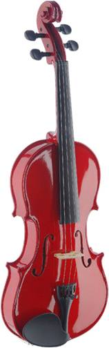

4/4 Solid Maple Violin w/ standard-shaped soft-case
- traditionally handcrafted with selected woods by skillful instrument makers
- constructed w/high quality rugged materials
- specs: solid spruce top
- solid maple back & sides
- maple neck & bridge
- black metal tailpiece w/ 4 fine tuners
- hard wood, ebonized fingerboard / chin rest/ tuning pegs
- comes with a bow
- finish: sunburst. -Price:Rs.17,000
STAGG VN44TR VIOLIN - TRANSPARENT RED

4/4 Solid Maple Violin w/ standard-shaped soft-case
- traditionally handcrafted with selected woods by skillful instrument makers
- constructed w/high quality rugged materials
- specs: solid spruce top
- solid maple back & sides
- maple neck & bridge
- comes with a bow
- colour: red. -Price:Rs.20,580